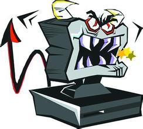

La Programación Orientada a Objetos (POO), es una técnica de programación
que concibe la solución de un problema como un conjunto de objetos que
interactúan entre sí a través del paso de mensajes.
Origen:
El origen o inicios de la POO se remonta al lenguaje de programación
SmallTalk, el cual sentó las bases sobre las cuales se desarrollarían otros
lenguajes como C++, Java, etc.
Propósitos de la POO
Los propósitos de la POO son muy variados, desde el desarrollo de grandes
sistemas de información, pasando por fines no my buenos.

Imagen de un virus